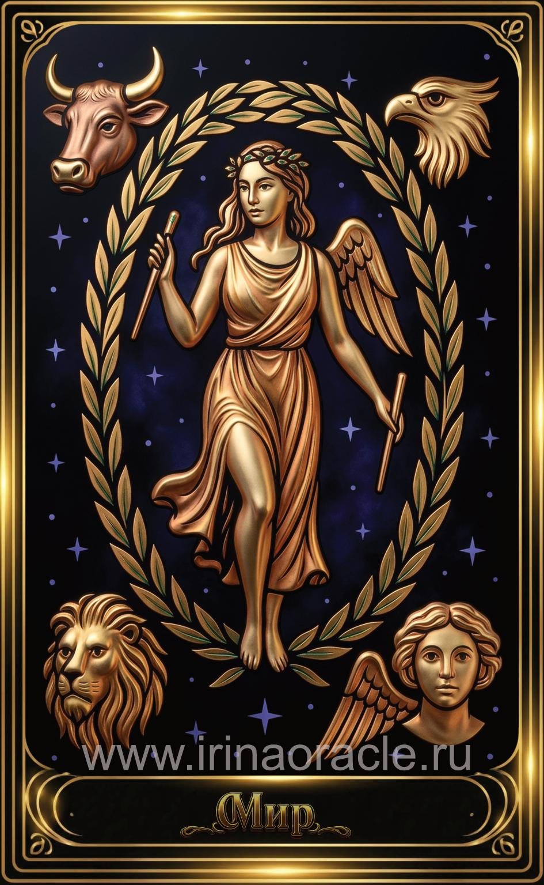

Мир — значение карты Таро
Мир — значение карты Таро

Мир — это карта завершения, целостности и достижения. Она символизирует успешное окончание цикла, гармонию, внутреннее и внешнее равновесие, а также чувство, что человек находится на своём месте. Это кульминация пути и переход на новый уровень.
Общее значение
Мир указывает на завершение важного этапа, достижение цели, гармонию и ощущение полноты. Это карта успеха, признания и внутреннего удовлетворения. Она говорит о том, что цикл завершён, и впереди — новый виток.
Это время праздновать результаты и принимать новое пространство возможностей.
Любовь и отношения
В любви Мир указывает на гармонию, зрелость, стабильность и глубокое взаимопонимание. Это отношения, которые прошли испытания и вышли на новый уровень.
Иногда карта говорит о завершении цикла — переходе к новому этапу, совместному или отдельному.
Работа и финансы
В работе Мир указывает на успешное завершение проекта, признание, достижение цели или выход на международный уровень. Это карта профессионального роста и расширения горизонтов.
В финансах — стабильность, завершение долговых ситуаций, уверенность и благополучие.
Здоровье
Мир указывает на восстановление, гармонию тела и духа, завершение сложного периода и общее улучшение состояния. Это карта баланса и здоровья.
Иногда — завершение лечения или переход к новому этапу заботы о себе.
Совет карты
Заверши начатое. Прими результат. Мир советует отпраздновать достижения, признать свою силу и позволить себе перейти на новый уровень.
Это время гармонии, ясности и расширения.
Теневая сторона
В тени Мир проявляется как страх завершения, нежелание отпускать старое или попытка удерживать цикл, который уже подошёл к концу.
Карта напоминает: завершение — это дверь в новое.